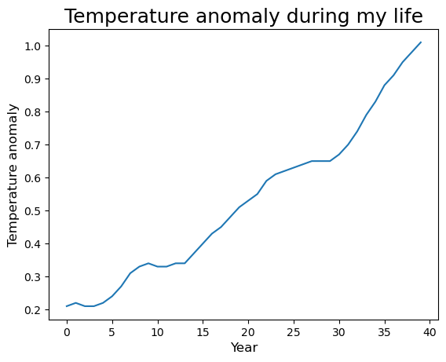

Activity 1: Plants and climate
What is a plant?
Humanity has an intimate relationship with plants. Through photosynthesis, plants are the ultimate source of nearly all food that humans consume. Plants are the source of many medicinal products, as well as religious and recreational psychoactive substances. Plants provide fibers for clothing and structural materials for buildings. Starting around 10,000 BCE, humanity started domesticating crops. The cultivation of plant species that had been dramatically altered by humans increased available calories and fueled the growth of civilizations across the globe.
Because plants are so diverse and vary in the composition of their communities across the world, the definition of "plant" is culturally specific, and reflects the relationship of a culture with local flora. Here, we are going to focus on a scientific definition of plants. A defining features of plants is that they are autotrophic: that is, they are capable of synthesizing their food from inorganic substances. Photosynthesis is the process by which plants and other organisms convert water and carbon dioxide into carbohydrates, using sunlight as energy. Cyanobacteria are a group of extant bacteria that perform photosynthesis. It is speculated that that long ago a cyanobacteriaum was engulfed by a single-cell eukaryote (an organism with a nucleus that contains most of its DNA). The cyanobacteria and the eukaryote developed a symbiosis, in which the engulfed cyanobacteria remained in the eukaryotic cell providing photosynthetically-derived carbohydrates. Through this endosymbiosis, the cyanobacteria evolved into a chloroplast, an organelle within plant cells where photosynthesis occurs.
From this single endosymbiotic event, all plants (and their captured cyanobacterium that provides photosynthesis in their cells as a chloroplast) arose. The descendants of the symbiotic cell are called the Archaeplastida ("old" + "plastid"). The Archaeplastida consist of three main groups: Glaucophyta (glaucophytes), Rhodophyta (red algae), and the Viridiplantae (green plants). The glaucophytes are a small group of freshwater unicellular algae of which only 15 species have been described. The red algae are mostly multicellular and marine. Over 7,000 species have been described. They possess beautiful branching architectures and a characteritic red color that arises from photosynthetic accessory pigments called phycobiliproteins, which capture light energy that is passed to chlorophyll molecules.
The third group is the Viridiplantae, or the "green plants". Below, the major groups of green plants are briefly described.
Viridiplantae, the green plants
The green plants are comprised of two major groups: the Chlorophyta and the Charophyta (freshwater algae) + Embryophyta (land plants)
Chlorophyta
The Chlorophyta ("green" + "plant") split from the lineage of the land plants (Embryophyta) and the freshwater algae (Charophyta) around 1,200 to 725 million years ago. Unlike the land plants, the spectacular diversity of the Chlorophytes is underappreciated. There are around 4,000 species of Chlorophyta that inhabit mostly marine but also freshwater and terrestrial habitats. Macroscopic complexity arose multiple times in Chlorophyta, through multicellularity (e.g., sea lettuce, Ulva), multicellular colonies (Volvox), and giant, single-celled organisms (siphonous algae like Caulerpa and Acetabularia). Like land plants, some Chlorophytes independently made it to land, through symbiosis. Lichens are terrestrial symbiotic organisms that arise between a fungus and a photosynthetic partner. The photobiont is usually a Chloropytic algae, but can also include cyanobacteria or other algae (or combinations thereof).
Charophyta
Charophytes are complex, freshwater algae. There are 2,800 to 6,000 charophyte species. The land plants (Embryophyta) likely arose from a Charophycean ancestor, although from which specifically remains contentious. Charophytes are named after Chara, a multicellular alga that superficially resembles land plants, with stem- and leaf-like structures. Choleochaete is another multicellular alga that forms a flat disc and with many features of land plants, including retaining zygotes after fertilization and plasmodesmata (cytoplasmic connections between adjacent cells). These features likely arose independently of land plants.
Bryophytes
Bryophytes are non-vascular plants, meaning that they do not have true vascular tissue containing lignin (a rigid polymer that is vital to erect growth in vascular plants). Bryophytes are comprised of three groups: liverworts (Marchantiophyta, 6,000 to 8,000 species), hornworts (Anthocerotophyta, 100 to 200 species), and mosses (Bryophyta, 12,000 species). All plants are characterized by the "alteration of generations": they alternate between haploid gametophytes with only one set of chromosomes that arise from spores and produce gametes and diploid sporophytes with two sets of chromosomes that arise through the fusion of two gametes and produce spores. In bryophytes, the larger and longer-lived stage is the gametophyte (unlike other land plants, in which the sporophyte is dominant). Unlike the elaborate sporophytes of other land plants, bryophyte sporophytes are unbranched.
Pteridophytes 🌿
Pteridophytes are vascular plants, with true xylem (water and nutient transport) and phloem (transport of soluble organic compounds produced during photosynthesis) tissues. Pteridophytes are also seedless plants. Although the diploid sporophyte stage is dominant, the gametophyte is more prominent than most seed plants. Pteridophytes are comprised of the Lycopodiophyta (club mosses, 1,200 species) and the Pteridophyta (ferns, whisk ferns, and horsetails, 11,000 species). Ferns have elaborate leaves called megaphylls, that are highly branched. These fronds develop acropetally (from the tip to base) and unfurl from a structure called a "fiddlehead". The evolutionary history of ferns is complicated and elaborate, and likely megaphylls evolved multiple times, independently of each other and the leaves of gymnosperms and angiosperms.
Gymnosperms 🌲
Gymnosperms are seed plants. The name gymnosperm means "naked seed", and refers to the unenclosed ovule that is fertilized to produce the seed. Seeds develop on the surface of leaves, the scales of cones, or solitary. Conifers (Pinophyta, 630 species) and cycads (Cycadophyta, 160 species) are the dominant gymnosperm groups. Gnetophyta (70 species) includes the genera Gnetum (tropical evergreen trees, shrubs, lianas), Ephedra (including species with medicinal properties and "Mormon-tea"), and Welwitschia (endemic to the Namib desert and producing two opposite, permanent leaves that grow from the base). The Ginkgophyta contains only a single, extant species: Ginkgo biloba.
Angiosperms 🌸
Angiosperms are the flowering plants. The name angiosperm derives from "casing" and "seed". Unlike gymnosperms, angiosperms produce seeds within an ovary. Angiosperms are characterized by flowers, endosperm within the seeds, and fruits that contain the seeds. There are over 300,000 known species of flowering plants. The first flowering plants arose 160 million years ago, quickly diversified, and replaced conifers as the dominant trees 100 to 60 million years ago.
The main groups of the Angiosperms are the Magnoliids (9,000 species including magnolias, bay laurel, black pepper, and avocado 🥑), Monocots (70,000 species including rice 🌾, banana 🍌, pineapple 🍍, maize 🌽, coconut 🥥, palm trees 🌴, and tulips 🌷), and Eudicots (175,000 species). Eudicots are comprised of two major groups, the Rosids (including cucumbers 🥒, strawberry 🍓, cherries 🍒, peaches 🍑, pears 🍐, apples 🍎, lemons 🍋, oranges 🍊, watermelon 🍉, and melon 🍈) and Asterids (including carrots 🥕, potatoes 🥔, kiwis 🥝, chili peppers 🌶, eggplant 🍆, tomatoes 🍅, and sunflower 🌻).
Typical features of monocots are a single cotyledon (or seed leaf), flowers with three petals, pollen with a single pore, and often leaves with parallel venation. Typical features of dicots include two cotyledons, flowers with four or five petals, pollen with three pores, and usually leaves with branching venation.


Lists of plants
You may have noticed that plants are described hierarchically. There is a single large group (plants) that becomes increasingly sub-divided down to the species level. For example, grapevines are classified as follows: Plantae, Angiosperms, Eudicots, Rosids, Order Vitales, Family Vitaceae, Genus Vitis, Species V. vinifera. The species name is comprised of the genus name (abbreviated after first use) and the species epithet.
We just covered the evolutionary history of all plants, but the flowering plants especially are numerous and diverse and the source of our major crops.
This interactive graphic shows the nested, taxonomic classification of angiosperm crop species, where circles represent the production tonne of each crop in 2011 (data from here). Crops are within circles denoting plant families (which always end with "-aceae").
In the previous lesson, you learned about indexing and creating lists (and how to create and index a list of lists!). In the cell below, create a list of lists with three levels:
- The first level of your list should be "monocots", "rosids", and "asterids"
- For the second level of your list, pick two families for each of the above groups (remember, plant families end in "-aceae" and yes, the names are complicated and long!)
- For the third level of your list, add as many crop species belonging to each family as you like to the respective list!
- Hint: it is easier to make your lists starting at the family level first and working up to add these lists to monocots, rosids, and asterids.
- Name your overall list "my_crops"
- Finally, print your list so you can see the results
- Remember, don't be afraid to add comments to your code using
#
Use this exercise to explore the evolutionary relationships of crops within the flowering plants! You can also look up your favorite crop species (wikipedia is a great resource) and place it accordingly in your list. We will share and discuss the crops you choose in class.
Answer
### ANSWER ###
asparagaceae = ["asparagus", "agave"]
araceae = ["taro", "yautia"]
anacardiaceae = ["cashews", "pistachios"]
malvaceae = ["cotton", "okra", ]
ericaceae = ["cranberries", "blueberries"]
apiaceae = ["carrots", "fennel", "coriander"]
monocots = [asparagaceae, araceae]
rosids = [anacardiaceae, malvaceae]
asterids = [ericaceae, apiaceae]
my_crops = [monocots, rosids, asterids]
print(my_crops)
[[['asparagus', 'agave'], ['taro', 'yautia']], [['cashews', 'pistachios'], ['cotton', 'okra']], [['cranberries', 'blueberries'], ['carrots', 'fennel', 'coriander']]]
Now, from your list "my_crops", select your favorite crop using indexing and print its name. Remember: your list has three levels!
Indexing the climate
Above, you learned about the evolutionary diversity of plants. Inherently this diversity is genetic: the differences between species are encoded in DNA. But the environment also plays a role in determining what plants are. The effects of the environment can be longterm, acting over geologic time periods as selection pressures that drive evolution. Or, the effects of climate can be over smaller time scales, during the lifetime of a plant. Plasticity refers to the effects of the environment in changing an organism's phenotype, what it is. Plants are often highly responsive to their environment: the quantity and quality of light they receive, competition with other plants or responding to animal predators, and temperature.
Climate change affects what plants are in many ways. Plants will directly respond to abiotic factors affected by climate change, such as temperature and precipitation. But they will also respond to indirect affects of cliamte change that result from entire ecosystems changing. Climate change is important to hu in multiple ways, the two most obvious being 1) effects on crops and other plants on which we depend for survival and 2) the loss of biodiversity.
Later in the course we will be analyzing longterm effects of climate on crops. But for now, let's use the indexing skills we just learned to look at some trends and also get a preview for visualizing data that you will learn about in the next lesson.
In the cell below, the temperature anamoly values starting at year 1900 to 2020 are provided in a list called temp_anomaly. These data are from NASA. Execute the cell below to create the list:
temp_anomaly = [-0.19,-0.23,-0.25,-0.28,-0.3,-0.33,-0.36,-0.37,-0.39,-0.4,-0.41,-0.38,
-0.35,-0.32,-0.31,-0.3,-0.29,-0.29,-0.29,-0.29,-0.27,-0.26,-0.25,-0.24,
-0.23,-0.22,-0.21,-0.2,-0.19,-0.19,-0.19,-0.19,-0.18,-0.17,-0.16,-0.14,
-0.11,-0.06,-0.01,0.03,0.06,0.09,0.11,0.1,0.07,0.04,0,-0.04,-0.07,-0.08,
-0.08,-0.07,-0.07,-0.07,-0.07,-0.06,-0.05,-0.04,-0.01,0.01,0.03,0.01,
-0.01,-0.03,-0.04,-0.05,-0.06,-0.05,-0.03,-0.02,0,0,0,0,0.01,0.02,0.04,
0.07,0.12,0.16,0.2,0.21,0.22,0.21,0.21,0.22,0.24,0.27,0.31,0.33,0.34,
0.33,0.33,0.34,0.34,0.37,0.4,0.43,0.45,0.48,0.51,0.53,0.55,0.59,0.61,
0.62,0.63,0.64,0.65,0.65,0.65,0.67,0.7,0.74,0.79,0.83,0.88,0.91,0.95,
0.98,1.01]
If there are data from 1900 to 2020, then there should be 121 values in the list. Using a function you learned about, check the length of the list temp_anomaly in the cell below:
Next, create a list called my_life using idexing that starts at the year you were born and goes until the end of the provided data to 2020. This list starts with data from 1900, which is a hint about how to appropriately index the data. Create your list through indexing in the cell below:
Check the length of your list using a function in the cell below to make sure you indexed correctly. It should be close to how old you are! (depending what day your birthday is...remember this list only goes up to 2020!)
39
In the next lesson, we will be learning how to plot and visualize our data. To do this, we will need to import sets of functionality called modules. As you will learn in the next lesson, we do this by writing import, the module we wish to import, and using as to say what we would like to refer to the module as in shorthand when we use it. There are some other lines of code we use so that the plots we make will display inline in the Jupyter notebook.
Execute the cell below to import the module matplotlib and a sub-module pyplot so that we can try to plot out the temperature anomaly data.
You will learn more about how to plot data in the next lesson, but let's try to visualize the temperature anomaly changes during your lifetime now! The function plot in matplotlib will take a list of numbers and plot them. In the empty parentheses below, out your list my_life and replace the string for title, x axis label, and y axis label to create a plot. Once you have made the changes to the code below, just press shift + enter and a plot should be displayed.
# Put your answer here
plt.plot( ) # Put the list with your temperature anomalies in your lifetime here
plt.title("Your title", fontsize=18)
plt.xlabel("x axis label", fontsize=12)
plt.ylabel("y axis label", fontsize=12)
Answer
### ANSWER ###
plt.plot(my_life)
plt.title("Temperature anomaly during my life", fontsize=18)
plt.xlabel("Year", fontsize=12)
plt.ylabel("Temperature anomaly", fontsize=12)

Congratulations on your first plot in python! Look at your plot and interpret it: what does it say? In the next lesson you will learn about plotting more in depth, but for now, that's all! Thank you for participating in this activity!